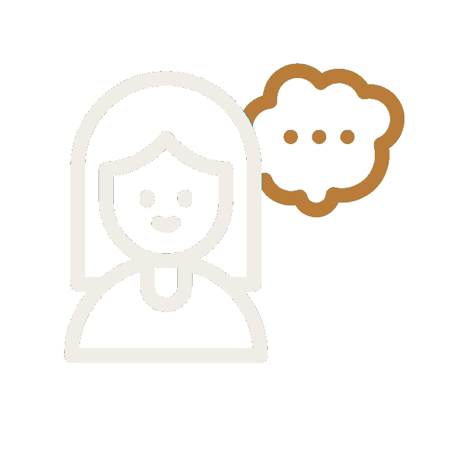
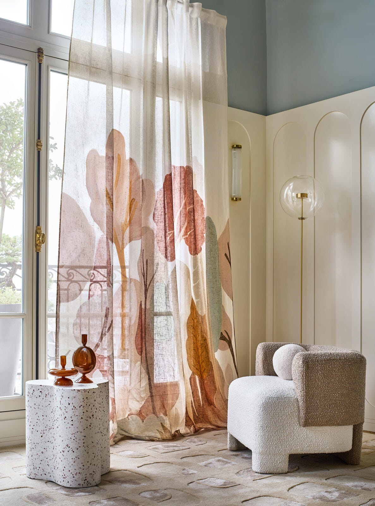

Hundratals designkollektioner, personlig rådgivning och skräddarsydda lösningar — allt under ett tak i Gustavsberg.
Ingen annan butik i området erbjuder kombinationen av personlig inredare, egen syateljé och färgblandning i butik.
Vi blandar din färg på plats — välj bland tusentals kulörer och få exakt den nyans du söker.
Vår sömmerska syr gardiner och textilier skräddarsydda efter ditt hem — från mått till montering.

Boka tid med vår inredningsexpert som hjälper dig navigera bland hundratals kollektioner.
Att välja bland 700 tapetkollektioner och lika många textilkollektioner kan vara överväldigande. Därför finns våra erfarna inredare — de lyssnar, förstår ditt hem och guidar dig till rätt material, mönster och kulör.
Boka personlig rådgivning i butiken. Du kan också boka färgsättning och fasadbesiktning.
Läs mer om våra tjänsterVi har inrett och färgsatt slott, villor, lägenheter och sjöbodar i snart 40 fantastiska, färgglada år.Värmdö Färgbod, sedan 1987
I vår syateljé förvandlar vi designtyger till gardiner, kuddar och överdrag som passar perfekt i just ditt hem. Välj bland hundratals tyger från varumärken som Morris & Co, Sanderson och Ralph Lauren — sedan tar vår sömmerska hand om resten.
Mer om syateljén
Vi ligger centralt i Gustavsberg på Värmdö — mellan Vaxholm i norr och Saltsjöbaden i söder. Kom förbi och känn på materialen!
Vägbeskrivning & öppettider